Characters
Characters Places
Places Stories
Stories Species
Species Organizations
Organizations Glossary
Glossary Transportation
Transportation Monsters
Monsters Jobs
Jobs Summons
Summons Items
Items Magic/Skills
Magic/Skills Weapon Types
Weapon Types In-Crossovers
In-Crossovers Ex-Crossovers
Ex-Crossovers Release Dates
Release Dates Name Origins
Name Origins Famous Moments
Famous Moments Music Database
Music Database Features
Features Game Help
Game Help Game Evolution
Game Evolution Square Art
Square Art Fan Flash
Fan Flash Final Fantasy Forums
Final Fantasy Forums Updates
Updates Site Info
Site Info Feedback
Feedback Full Index
Full Index Links
Links Staff
StaffKingdom Hearts II, a direct sequel to Kingdom Hearts, was released for the PlaySatation 2 in December 2005 in Japan and March 2006 in America. Just about all the old conventions are back, along with some new ones. True to its name, it packs double the FF character references, keeping all of the previous ones and adding in more. Most characters also have expanded roles. While there are less regular items that have FF names, there are more Gummi blocks that do.
Twilight Town
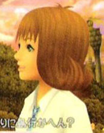 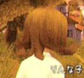 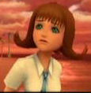
Selphie (voiced by Molly Keck): Along with everyone else, Selphie is a bit older now. She only appears in one scene, talking with Kairi on their way home from school, discussing their old friends. The only time we see her, she is dressed in school clothes. Her voice is the same as in Kingdom Hearts 1. Original game: FF8
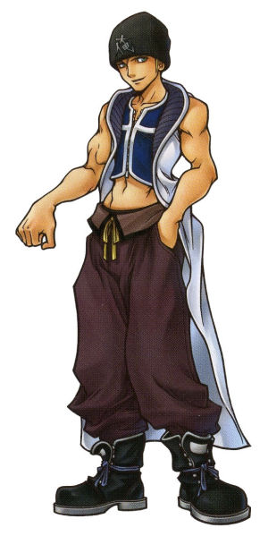
Seifer (voiced by Will Friedle): Seifer Almasy returns as a slightly younger version of himself (about 15), wearing a toque with a Japanese kanji character. He's basically the leader of gang of tuffs consisting of Fuu, Rai, and Vivi that make trouble around the town. His gang rivals Hayner's, and the two are constantly trying to one-up each other. He even reprises his role as head of the "Twilight Town Disciplinary Committee" and still calles people "chicken-wuss". You can battle Seifer near the beginning of the game, although you only fight with foam Struggle bats. Original game: FF8
{kind=link}
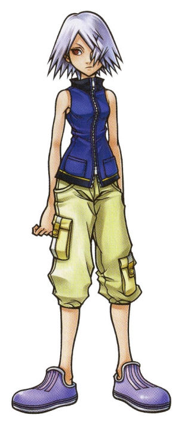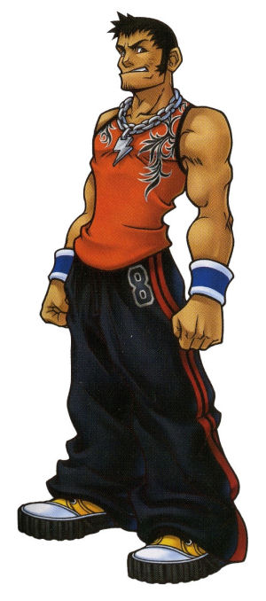
Fuu (voiced by Jillian Bowen) and Rai (voiced by Brandon Adams): With Seifer comes Seifer's posse, making up the rest of the Twilight Town Disciplinary Committee. Like FF8, they act as his sidekicks, but unlike FF8, Fuu and Rai don't do much more than cheer and jeer from the sidelines. Rai still has his trademark "y'know" at the end of every sentence, and Fuu still talks in single expressive words (although she's broken the habit of using all CAPITALS). Original game: FF8
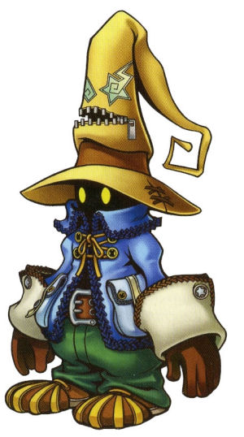
Vivi Ornitier (voiced by Melissa Disney): Oddly enough, Vivi's endearingly innocent character hangs around Seifer's gang most of the time. At one point he's "possessed" by a Nobody and goes nuts when Roxas fights in the Struggle tournament. Other than the very strange hat, he looks and acts pretty much the same as in FF9. He sounds very much like a child, with a high-pitched non-gender-specific voice. Jiminy's Journal indicates that he is male. Original game: FF9
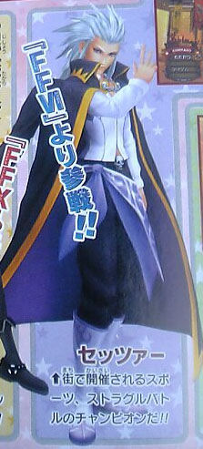
Setzer Gabbiani (voiced by Crispin Freeman): Yep, Setzer is here and he's been mutilated (at least in my opinion). Rather than the cool, dramatic gambler, Setzer is now a rather wimpy, melodramatic jerk with a very outlandish, flamboyant outfit. This might be because he was not designed by Tetsuya Nomura (Designer of Kingdom Hearts). He's the longtime champion of the Struggle tournament and is constantly surrounded by adoring female fans. However, his tenuous grasp on the title is such that he tries to get Roxas to throw the match. When you fight him in the Struggle, he begins the battle with a line that should be familiar: "My life is but a chip in your pile. Time to ante up!" Setzer is voiced by Crispin Freeman, a veteran of anime and video games whose repertoire includes Xenosaga, Star Ocean 3, Slayers, Witch Hunter Robin, and many more; he was also Rude in FF7AC. Original game: FF6
Tidus/Wakka: Although Tidus and Wakka don't directly appear in this sequel, they are mentioned by Selphie in her one scene, saying they are "all wrapped up in their ball game". For some reason, she now pronounces it tye'dus, instead of tee'dus as in Kingdom Hearts 1. Original game: FF10
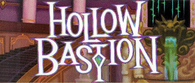
Cloud Strife (voiced by Steve Burton): Cloud is back and decked out in the same clothes he wears in FF7:AC. He actually interacts (if minimally) with the other Hollow Bastion folks this time around, indicating more strongly that he does know them... however, there are some indications that he, Tifa, and Sephiroth are actually not from Hollow Bastion at all, but ended up there. During the Heartless War, in the middle of the game, Sephiroth appears, and the two trade words and have a small skirmish. Sephiroth calls himself the "dark side of Cloud's heart". Cloud fights alongside Sora in one scene during the midgame (although not technically in the party), and you can fight him in the Hades Paradox Cup as well. He has the same voice as in Kingdom Hearts 1 and FF7:AC. (Note: Jiminy's Journal incorrectly refers to him as being a "SOLDIER". Cloud was never in SOLDIER.) Original game: FF7
Leon (a.k.a. Squall Leonheart) (voiced by Doug Erholtz): Still the leader of the group and the head of the newly christened Hollow Bastion Renovation Committee. He reveals himself to be a bit of a computer whiz as well. He fights along with Sora in one scene halfway through the game, and you can fight him in the Pain and Panic Cup and Hades Cup. Probably one of the highlights of Kingdom Hearts 2 is seeing him fighting back to back with Cloud in the middle of the game. At the end, you see him sitting on a ledge, reading a letter that has a little red heart with wings fly up (from Rinoa, perhaps?). Original game: FF8
{kind=link}
Aerith Gainsborough (voiced by Mena Suvari): She still hangs around the rest of the gang, but again, doesn't seem to do much. Cloud's only interaction with her is in the beginning when you first see Cloud. He tells her to stay away, and not get involved. Her clothes have changed, although not to FF7AC garments (she wears her regular FF7 clothes there). We never see her fight, except in one seen where the Heartless from Space Paranoids are invading Hollow Bastion, and she tells Leon, with fierce determination, that she'll hold off the Heartless. Her voice is the same as FF7:AC, but different from Kingdom Hearts 1. Original game: FF7
Tifa Lockheart (voiced by Rachael Leigh Cook): Tifa finally joins the Kingdom Hearts cast, decked out in her FF7:AC clothes. You first see her in the bowels of the castle, looking for Cloud with a determination bordered on obsession. She fights with Sora during one scene halfway through the game, and you can fight her in the Hades Paradox Cup. Her voice is the same as FF7:AC. Original game: FF7
Yuffie Kisaragi (voiced by Mae Whitman): Yuffie returns with all her bouncy energy, in her FF7:AC costume. You can fight alongside her during one scene, and you can fight her in the Pain and Panic and Hades Cups. Oddly enough, she is voiced by Mae Whitman; that would make her the only KH2 character from FF7 who is not voiced by the corresponding FF7:AC voice actor. Original game: FF7
Cid Highwind (voiced by Chris Edgerly): He's kept his wardrobe from the previous game, but gained a voice (with a strange southern drawl). He takes care of the computer in the Hollow Bastion headquarters in Merlin's house, and composes a program to get rid of the Heartless in the castle computer. He has the same voice as in FF7:AC. Original game: FF7
Sephiroth (voiced by George Newbern): No longer just a boss battle, Sephiroth now shows up as Cloud's "dark side", which Cloud is searching for throughout the game. Near the end of the game, Sora can meet Sephiroth again, who'll challenge him to a duel (like Kingdom Hearts 1, this is an optional boss fight that's far harder than the last boss of the game). After this, Sephiroth tells Sora to bring Cloud to him. He does so. Cloud and Sephiroth duel, and Sephiroth tells Cloud that no matter how many times he falls, he'll continue returning, drawn by the darkness in Cloud's heart. Tifa then shows up and tells Cloud that she'll surround him with light, making Sephiroth unable to reach his darkness (whatever that actually means). Cloud begins to shine, then he and Sephiroth disappear. Goofy asks if he's "gone back to his home world" (implying that Tifa, Sephiroth, and Cloud at least do not come from Hollow Bastion/Radiant Garden). Tifa says she'll continue searching, and gives Sora the Fenrir keyblade, which resembles Cloud's bandage-wrapped sword from Kingdom Hearts 1. (Note that you can still fight Cloud in the Hades Paradox Cup even after this scene.) Original game: FF7
{kind=link}
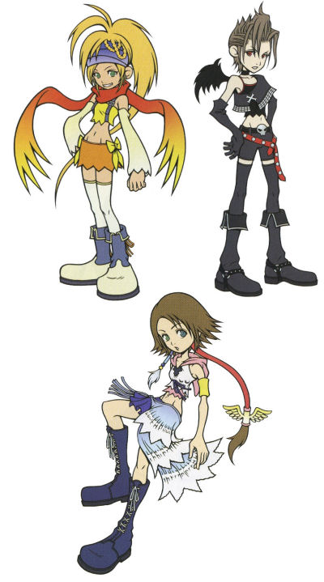
Yuna (voiced by Hedy Burgess), Rikku (voiced by Tara Strong), Paine (voiced by Gwendoline Yeo): In perhaps the most bizarre FF appearance (except maybe for Setzer), the Gullwings return as little fairies! They look like chibi-fied versions of themselves with fairy wings, except for Paine, who's grown bat wings. They don't figure too heavily into the game, except showing up and declaring they're mischeivious treasure hunters. The first time Sora sees them, they're spying on Leon for Maleficent. Later, Donald Duck convinces them to fight along with Leon. We see them take on a single Armored Knight and win, until they're chased off by five more :). Afterwards, Sora can meet them in a humorous conversation which eventually ends in them giving him the Gullwing Keyblade. They then strike their trademark pose, and disappear. They're voiced by the same actresses as in FFX-2. Original game: FF10, FFX-2
{kind=link}

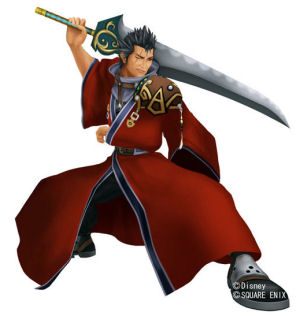 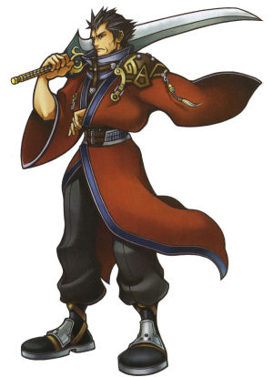
Auron (voiced by Matt McKenzie): Auron's quite interesting. Unlike the others, it seems like Auron really is meant to be the actual character from FF10, and not an "alternate-reality" character. He has the same voice and same appearance (except for a slightly different hairstyle, clean-shavenness, loss of sake jug & sunglasses, and requisite clown-sized shoes). He's also the only FF character who joins your party for real.
Just like Kingdom Hearts 1, Sora and his friends travel to worlds using the gummi ship. It's just as customizable as the first game, but the blocks come in a few differnt shapes. This time around, ships also have abilities, like auto-life. The following Gummi Blocks are FF elements: Fire, Fira, Firaga, Blizzard, Blizzara, Blizzaga, Thunder, Thundara, Thundaga, Gravity, Gravira, Graviga, Comet, Meteor, Ultima, Drain, Shell, Orichalcum, Masamune, Excalibur, Gungnir
Abilities: Auto-Life, Auto-Regen
Blueprints: Highwind, Falcon, Invincible, PuPu, Tonberry, Moogle, Chocobo, Cactuar, Cait Sith, Fenrir
Gummi ships also have the addition of Teeny Ships, smaller gummi ships that fight alongside the big one. These have their own names as well which are based on weapons found throughout the series: Ziedrich, Organics, Mystile, Wingedge, Main Gauche, Edincoat, and Hawkeye.
Note: the only magic not mentioned here is Magnet/Magnera/Magnaga which attracts enemies to a single spot.
The only ability with a FF reference this time around is Draw (from FF8). It attracts munny, HP balls, and drive balls to you from a further distance.
Regular items: Potion, Hi-Potion, Mega-Potion, Ether, Elixir, Megalixir, Tent, Mega-Ether (these are all the same as in Kingdom Hearts 1)
Synthesis items: Orichalcum
Armor: Aegis Chain, Blizzard/Blizzara/Blizzaga Armlet, Fire/Fira/Firaga Bangle, Ribbon, Thunder/Thundera/Thundaga Trinket
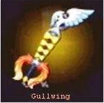
Gullwing: Given to you by Yuna, Rikku, and Paine after the fight against 1,000 Heartless. It doubles EXP when Sora is in critical mode. Its keychain is a wing.
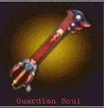
Guardian Soul: Given to you after finishing off Hades and freeing Auron from Hades' spell. Damage from reaction commands is increased. Its keychain is Auron's sake jug.
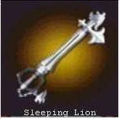
Sleeping Lion: Given to you by Leon after helping fix the computer in Hollow Bastion. Adds a hit to ground combo.
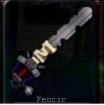
Fenrir: Given to you by Tifa after defeating Sephiroth. Removes one hit from ground and air combos. This is named after the Fenrir summon and Cloud's motorcycle in FF7:AC. Its keychain is the wolf-head badge Cloud wears.
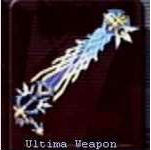
Ultima Weapon: Sora's best weapon, obtained only through synthesizing. MP recharges at a very fast rate.
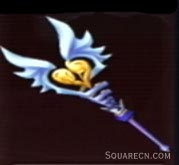
Save the Queen: Donald's best weapon that can only be made through synthesizing. Increases healing effects on the self. (There's also a Save the Queen+ that has MP Hastega) (Note: Goofy also has the Save the King weapon, but this has not appeared in any FF game).
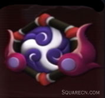
Genji Shield: Increases the drop rate of items.
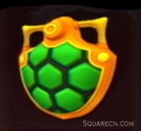
Adamant Shield: One of Goofy's shields. It resembles a turtle shell, which may be a reference to Adamantoise.
As Sora follows the basic storyline of Hercules, chasing Hades down into the Underworld, Hades summons Auron from the underworld (he's dead, get it?) with the intention of having him fight Sora. Auron tells him "This is my story. And you have no part in it!" Then he runs away with Sora to the Underworld entrance, where he can go no further. In the second half of the game, Hades convinces Hercules to fight Auron in the Hades Cup. Auron doesn't really want to fight, but he's being controlled by Hades via a sort of voodoo doll. Sora finds the doll, and when he touches it, a whole bunch of lines from his journey with Braska and Jecht, before Yunalesca kills him, enter his mind (see FF10 story). Sora manages to return the doll to Auron in time to save Hercules, and everyone fights Hades and defeats him. After this, Sora gets the Guardian Soul, a keyblade based on Auron. During the end-game credits, we see Auron at looking at the rebuilt coliseum from a distance, then walking back into the Underworld, where he turns into a bunch of pyreflies.
Auron's Limit command, Bushido, is from his Overdrive from FFX. It's activated by an ability called Overdrive (duh). It consists of a few moves which are his overdrives from FF10: Shooting Star, Banishing Blade, and it finishes off with Spiral. Other abilities include Healing Water, an item from FFX. Original game: FF10
Final Fantasy, all games and animation bearing the Final Fantasy name, and all characters in said games or animation are copyright their respective creators, including but not limited to Squaresoft, Square Enix, Square EA, Tokyo TV, and ADV Films.
{kind=link}